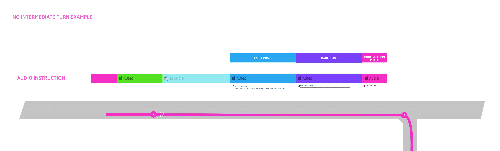
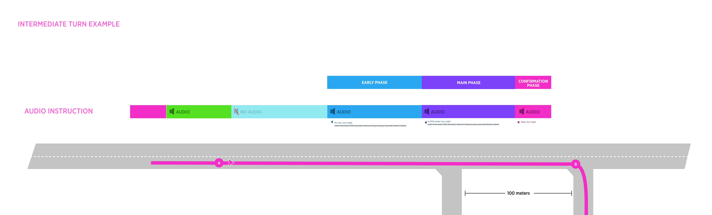

| Interaction Designer | User 3d941 |
|---|---|
| Visual Designer | Georgios Koultouridis |
| PM |
Make audio annoucements more digestible
Reduce the details of the audio announcement (street name + Towards) on Isolated turn for Early and Main phase audio triggering logic
Isolated turn is a road network scenario where there are no intermediate turns between the driver and the target manoeuvre.
It can be conceptualise as an 'obvious turn' and this why audio announcement can be simplified.
this applies to all road types except for controlled access roads
there are not intermediate turns between the driver and the target manoeuvre
When these conditions are true, the system will not announce:
Take a look at a real scenario here (Google Maps)
No Intermediate turn

Intermediate turn
